O problema
A elaboração manual de laudos de exames periciais menos complexos consome tempo com tarefas repetitivas, preenchimento de dados e adaptação de textos padronizados, aumentando o risco de erros e retrabalho.
Atualmente, o perito reúne os dados da requisição e dos arquivos gerados durante o exame, utiliza um laudo anterior como base e preenche ou adapta manualmente as informações e os textos padronizados no Word, revisando o documento antes de finalizá-lo.
O processo manual consome tempo e aumenta a probabilidade de erros humanos, como falhas no preenchimento de dados, omissões de informações e inconsistências nos textos, gerando retrabalho na elaboração dos laudos de exames periciais menos complexos.
AS-IS · o processo antes do MVP
O caminho real, com quem faz, o que entra, onde espera e o que é automatizável. Fonte: tabela AS-IS do projeto.

Fluxograma AS-IS · amarelo: etapa manual; tracejado: ponto de espera. Os números correspondem à tabela. Fonte Mermaid.
| Etapa | Quem faz | Entra | Ação | Sai | Sistema | Regra | Onde espera | Tempo | Automatizável |
|---|---|---|---|---|---|---|---|---|---|
| Obter a requisição | Perito | Requisição do exame | Baixa a requisição em PDF no ATENA e salva na pasta do protocolo | PDF da requisição organizado | ATENA e computador | Identificar o protocolo correto | Não identificado | A medir | Pouco |
| Organizar os arquivos | Perito | Pastas do exame, arquivos TXT, HTML e PDF | Confere e organiza os arquivos necessários à elaboração do laudo | Arquivos disponíveis para consulta | Explorador de arquivos | Verificar se os arquivos necessários estão disponíveis | Possível, se houver arquivos faltantes | A medir | Sim, com apoio humano |
| Consultar os dados do aparelho | Perito | DEVICE INFO.txt | Consulta marca, modelo e IMEIs do celular | Dados do aparelho identificados | Arquivo TXT | Conferir e corrigir dados, se necessário | Possível, se houver divergências | A medir | Sim, com apoio humano |
| Consultar o hash | Perito | HASHDOHASH.txt | Localiza e confere o valor SHA-256 | Hash identificado | Arquivo TXT | Conferir se o valor corresponde ao arquivo do exame | Possível, se houver inconsistência | A medir | Sim, com apoio humano |
| Consultar dados dos cartões SIM | Perito | Arquivos HTML das pastas OBJ 01-A, OBJ 01-B etc. | Consulta ICCID e operadora de cada cartão SIM | Dados dos cartões SIM identificados | Arquivos HTML | Verificar quantos cartões SIM existem | Possível, se houver arquivos faltantes | A medir | Sim, com apoio humano |
| Reutilizar um laudo anterior | Perito | Laudo anterior em Word ou modelo institucional | Abre, renomeia e utiliza o documento como base | Documento inicial para o novo laudo | Microsoft Word | Escolher um documento adequado e preservar o modelo | Não identificado | A medir | Sim, com apoio humano |
| Preencher os dados iniciais | Perito | Requisição e dados dos arquivos | Transfere manualmente os dados para o Word | Laudo com dados iniciais preenchidos | Microsoft Word | Conferir números, datas, nomes e demais identificadores | Não identificado | A medir | Sim, com apoio humano |
| Elaborar a descrição dos objetos | Perito | Dados do celular, envelope de segurança e cartões SIM | Redige ou adapta a descrição dos objetos examinados | Seção de descrição dos objetos | Microsoft Word e textos de referência | Adequar a descrição aos objetos efetivamente recebidos | Não identificado | A medir | Sim, com apoio humano |
| Elaborar a seção dos exames | Perito | Informações do exame e textos padronizados | Seleciona e adapta os textos relativos aos procedimentos realizados | Seção dos exames preenchida | Microsoft Word e arquivo de textos padronizados | Selecionar o texto compatível com a situação real | Não identificado | A medir | Sim, com apoio humano |
| Elaborar a seção de anexos | Perito | Hash e informações dos arquivos digitais | Preenche a seção e as tabelas de anexos | Seção de mídias e anexos preenchida | Microsoft Word | Conferir os dados dos arquivos apresentados | Não identificado | A medir | Sim, com apoio humano |
| Responder aos quesitos | Perito | Quesitos da autoridade e textos de respostas padronizadas | Transcreve os quesitos e elabora ou adapta as respostas | Quesitos numerados e respondidos | PDF da requisição, eventualmente ATENA, e Word de referência | A resposta deve corresponder ao quesito e aos resultados do exame | Não identificado | A medir | Sim, com apoio humano |
| Elaborar as considerações | Perito | Informações específicas do caso | Redige ou adapta as considerações finais | Seção de considerações preenchida | Microsoft Word | Manter conclusões compatíveis com os resultados periciais | Não identificado | A medir | Sim, com apoio humano |
| Revisar o laudo | Perito | Documento Word preenchido | Confere dados, textos, quesitos, formatação e possíveis omissões | Laudo revisado | Microsoft Word | Corrigir erros antes da finalização | Se houver necessidade de correções | A medir | Sim, com apoio humano |
| Salvar a versão final | Perito | Laudo revisado | Salva o documento final na pasta correspondente | Laudo pericial em Word finalizado | Computador e Microsoft Word | Confirmar nome e local de salvamento | Não identificado | A medir | Sim, com apoio humano |
TO-BE · o processo com o MVP
O que muda em cada etapa, quem passa a fazer e o ganho esperado. Fonte: tabela TO-BE do projeto.

Fluxograma TO-BE · verde: máquina (automação local); azul: pessoa (fé pública). Fonte Mermaid.
Quando esse processo existir, os peritos deixarão de elaborar manualmente laudos de exames periciais menos complexos e passarão a gerar documentos padronizados com mais agilidade, reduzindo erros humanos e retrabalho, mantendo a revisão e a validação técnica sob sua responsabilidade.
- Selecionar os arquivos do caso
O perito seleciona a requisição e os arquivos já produzidos durante o exame.
A pessoa assistida pela máquinaCentralização das informações - Extrair dados dos arquivos
O sistema lê o PDF por OCR e identifica dados nos arquivos TXT e HTML.
A máquina (automação)Redução de digitação manual - Conferir os dados extraídos
O perito verifica e corrige os dados identificados pelo sistema.
A pessoa assistida pela máquinaPrevenção de erros humanos - Selecionar o documento-base
O perito escolhe o modelo institucional ou um laudo anterior em Word.
A pessoa assistida pela máquinaAproveitamento de documentos existentes - Montar a descrição dos objetos
O sistema organiza os dados do celular e dos cartões SIM conforme as informações disponíveis.
A pessoa assistida pela máquinaPadronização e agilidade - Inserir textos dos exames
O sistema sugere ou insere textos padronizados conforme as opções selecionadas pelo perito.
A pessoa assistida pela máquinaMenos retrabalho na redação - Organizar quesitos e respostas
O sistema identifica e numera os quesitos e auxilia na seleção das respostas padronizadas.
A pessoa assistida pela máquinaMelhor organização e menor esforço repetitivo - Gerar o documento Word
O sistema preenche e formata o laudo, preservando o documento-base escolhido quando aplicável.
A máquina (automação)Redução do tempo de elaboração - Executar conferência automática
O sistema verifica campos vazios, dados inconsistentes e itens obrigatórios ausentes.
A máquina (automação)Identificação antecipada de falhas - Revisar e validar o laudo
O perito confere o conteúdo, os resultados técnicos, as respostas e a formatação.
A pessoa, sem mudançaManutenção da responsabilidade técnica - Corrigir e gerar a versão final
O perito solicita ou realiza ajustes e salva a versão final aprovada.
A pessoa assistida pela máquinaMenos erros e maior eficiência
| Etapa | O que muda | Quem faz | Benefício | Esforço |
|---|---|---|---|---|
| Selecionar os arquivos do caso | O perito seleciona a requisição e os arquivos já produzidos durante o exame. | A pessoa assistida pela máquina | Centralização das informações | Baixo |
| Extrair dados dos arquivos | O sistema lê o PDF por OCR e identifica dados nos arquivos TXT e HTML. | A máquina (automação) | Redução de digitação manual | Alto |
| Conferir os dados extraídos | O perito verifica e corrige os dados identificados pelo sistema. | A pessoa assistida pela máquina | Prevenção de erros humanos | Médio |
| Selecionar o documento-base | O perito escolhe o modelo institucional ou um laudo anterior em Word. | A pessoa assistida pela máquina | Aproveitamento de documentos existentes | Baixo |
| Montar a descrição dos objetos | O sistema organiza os dados do celular e dos cartões SIM conforme as informações disponíveis. | A pessoa assistida pela máquina | Padronização e agilidade | Médio |
| Inserir textos dos exames | O sistema sugere ou insere textos padronizados conforme as opções selecionadas pelo perito. | A pessoa assistida pela máquina | Menos retrabalho na redação | Médio |
| Organizar quesitos e respostas | O sistema identifica e numera os quesitos e auxilia na seleção das respostas padronizadas. | A pessoa assistida pela máquina | Melhor organização e menor esforço repetitivo | Alto |
| Gerar o documento Word | O sistema preenche e formata o laudo, preservando o documento-base escolhido quando aplicável. | A máquina (automação) | Redução do tempo de elaboração | Médio |
| Executar conferência automática | O sistema verifica campos vazios, dados inconsistentes e itens obrigatórios ausentes. | A máquina (automação) | Identificação antecipada de falhas | Médio |
| Revisar e validar o laudo | O perito confere o conteúdo, os resultados técnicos, as respostas e a formatação. | A pessoa, sem mudança | Manutenção da responsabilidade técnica | Médio |
| Corrigir e gerar a versão final | O perito solicita ou realiza ajustes e salva a versão final aprovada. | A pessoa assistida pela máquina | Menos erros e maior eficiência | Baixo |
O que o MVP entrega
Tela-assinatura: Bancada do caso: passos à esquerda e trabalho à direita.
Menu do MVP: CasosBibliotecaHistóricoConfiguração
Regras de negócio
| ID | Regra | Quando | Tipo | Exceção |
|---|---|---|---|---|
RN01 | O sistema deve permitir selecionar a pasta do caso criada pelo perito. | Início do processo | Validação | Nenhuma |
RN02 | O sistema deve verificar a existência dos arquivos necessários antes de iniciar a geração. | Importação dos arquivos | Validação | Arquivo ausente pode ser informado manualmente, quando possível |
RN03 | Os IMEIs e ICCIDs devem ser tratados como texto, preservando todos os dígitos. | Leitura e preenchimento dos dados | Validação | Nenhuma |
RN04 | Os dados extraídos automaticamente devem ser apresentados ao perito para conferência antes da geração do laudo. | Após a extração | Negócio | Dados não extraídos podem ser preenchidos manualmente |
RN05 | Cada laudo do MVP deve corresponder a um único aparelho celular. | Montagem do documento | Negócio | Outros tipos de exame ficam fora do MVP |
RN06 | O sistema deve permitir nenhum, um ou vários cartões SIM, conforme os arquivos disponíveis. | Descrição dos objetos | Negócio | Na ausência de SIM, a descrição deve refletir essa condição após confirmação do perito |
RN07 | Cada cartão SIM deve ser associado ao identificador correto do objeto, como 01-A ou 01-B. | Leitura dos arquivos HTML | Validação | Dados ambíguos exigem conferência manual |
RN08 | O sistema deve inserir somente textos padronizados compatíveis com as opções selecionadas e os dados confirmados. | Montagem do laudo | Negócio | O perito pode editar ou redigir o texto manualmente |
RN09 | Os quesitos devem ser numerados sequencialmente e associados às respectivas respostas. | Montagem da seção de quesitos | Validação | Quesitos não identificados automaticamente devem ser inseridos ou corrigidos manualmente |
RN10 | O sistema não deve elaborar nem aprovar conclusões técnicas de forma autônoma. | Elaboração e revisão do laudo | Negócio | Nenhuma |
RN11 | O sistema deve alertar sobre campos obrigatórios vazios ou inconsistentes antes de gerar a versão final. | Conferência automática | Validação | O perito pode corrigir os dados e repetir a conferência |
RN12 | O documento gerado deve preservar a estrutura e a formatação do modelo escolhido, dentro das limitações técnicas identificadas. | Geração do Word | Validação | Ajustes de formatação podem exigir intervenção manual |
RN13 | O sistema deve salvar o novo laudo em arquivo separado, sem sobrescrever o modelo ou laudo anterior. | Salvamento | Negócio | Sobrescrita somente mediante ação explícita e controlada, se futuramente permitida |
RN14 | O laudo somente será considerado finalizado após a revisão e validação do perito. | Encerramento do processo | Negócio | Nenhuma |
RN15 | O MVP deve funcionar localmente, sem conexão automática com o ATENA. | Em todas as etapas | Acesso | Integrações futuras dependem de avaliação e autorização específicas |
RN16 | Os testes iniciais devem utilizar dados fictícios ou documentos devidamente anonimizados. | Desenvolvimento e testes | LGPD | Uso de dados reais depende das autorizações e regras institucionais aplicáveis |
Papéis
| Papel | Quem é | O que vê | O que faz | O que não faz | Registro |
|---|---|---|---|---|---|
| Perito | Profissional responsável pelo exame e pelo laudo | Dados do caso, arquivos importados, textos padronizados e documento gerado | mporta arquivos, confere dados, seleciona e edita textos, responde aos quesitos, revisa e salva o laudo | Aprovar automaticamente conclusões técnicas ou dispensar a própria revisão | Arquivos utilizados, alterações realizadas e data de geração do documento |
| Gerência (chefia) | Gerente responsável pelos textos padronizados | Biblioteca de textos e respostas-modelo | Aprova e versiona os textos padronizados e as respostas-modelo | Alterar laudo de outro perito | Versão e data de aprovação de cada texto |
| Responsável pelos testes | Integrante do grupo que conduz o piloto | Casos fictícios, tempos e correções | Roda os casos de teste e registra tempo e correções | Usar dados reais sem autorização | Planilha de testes do MVP |
Métricas do piloto
Como testar
O MVP é um `index.html` offline, com dados fictícios. Abra index.html.
cd Apps/agiliza-mais python construir.py python testes/testar.py python testes/cenarios.py python testes/jornada.py # Lightpanda (via WSL, CDP em 9222 e HTTP em 8000) python testes/jornada.py --cdp http://127.0.0.1:9222 --base http://127.0.0.1:8000
Documentos: PROJETO.md · sprint.md · README.md